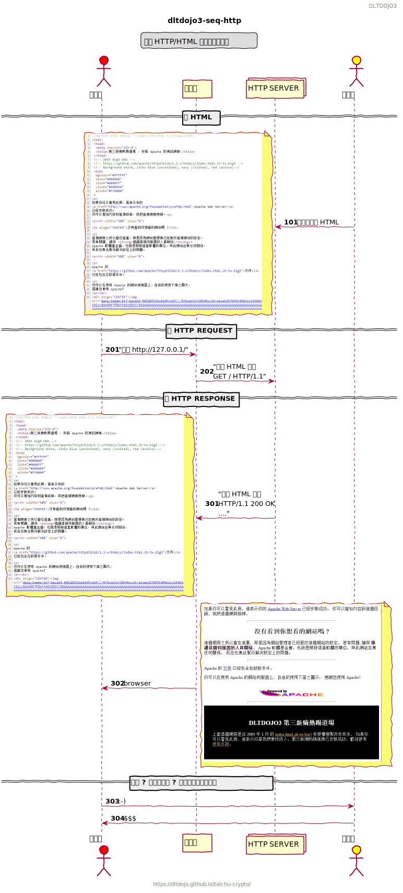

Apache Big5
一個 HTTP/HTML 網路的買賣故事

Index of TAICHU-RAW

HTML 表裡
index.html of taichu-raw 為執行 taichu-raw 的預設首頁，上圖塗黑為示範效果。

HTML 原
.big5
httpd-1.3.x/htdocs/index.html.zh-tw.big5
html
httpd-1.3.x/htdocs/index.html.zh-tw.big5
HTTP
$ cd taichu-crypto (master)
$ curl -vk https://127.0.0.1:8443
curl-vk.txt 為 curl 對 taichu-raw 做 HTTP 通訊的往來紀錄，裡面有大量 HTML 容易引起 mdbook 錯誤解析，請開啟另外網頁查看。
要
> GET / HTTP/2
> Host: 127.0.0.1:8443
> User-Agent: curl/7.57.0
> Accept: */*
>
給
< HTTP/2 200
< content-length: 5256
< date: Sat, 31 Aug 2019 04:40:02 GMT
<
HTML BODY....
差異
- big5
- HTML5
- HTTP/2
- TLSv1.2
PlantUML code
@startuml
header DLTDOJO3
footer https://dltdojo.github.io/taichu-crypto/\nLicensed under the Apache License Version 2.0
title dltdojo3-seq-http
legend top
一個 HTTP/HTML 網路的買賣故事
endlegend
skinparam handwritten true
actor "消費者" as Alice #red
participant "Browser\n瀏覽器" as Browser
collections "HTTP Server\n超文本傳輸協定服務" as HTTPD
actor "生產者" as Bob #yellow
== 寫 HTML ==
autonumber 101
Bob -> HTTPD : 上傳寫作檔 HTML
note left
<img:../images/apache-big5-html-src.png{scale=0.5}>
end note
== 要 HTTP REQUEST ==
autonumber 201
Alice -> Browser : "要求 http://127.0.0.1/"
Browser -> HTTPD : "要求 HTML 檔案\nGET / HTTP/1.1"
== 給 HTTP RESPONSE ==
autonumber 301
HTTPD -> Browser : "回傳 HTML 檔案\nHTTP/1.1 200 OK\n...."
note left
<img:../images/apache-big5-html-src.png{scale=0.5}>
end note
Browser -> Alice : browser
note right
<img:../images/apache-big5.png{scale=0.5}>
end note
== 免費 ? 白吃的午餐 ? 注意力與隱私商品化 ==
Alice -> Bob : :-)
Bob -> Alice : $$$
@enduml